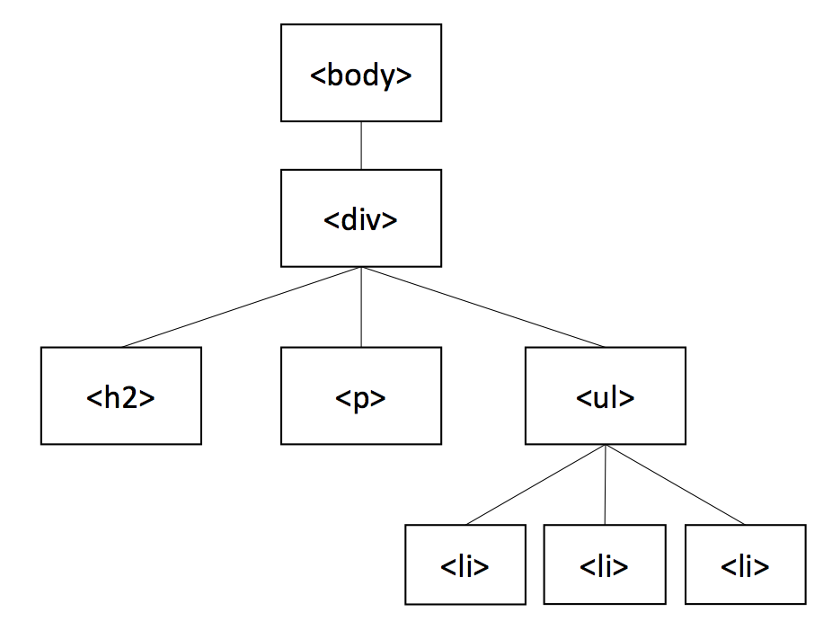

Traversing means after selecting an element or elements, you can select other elements based on their relationships to the selected element(s). To select elements based on the hierarchy in the DOM tree, you can use either hierarchy selectors or traversal methods. jQuery provies a variety of traversal methods to access the selected elements' ancestors(parent, grandparent, etc), descendants(child, grandchild, etc) and siblings(share the same parent). With traversal methods, you can also select specific elements from the selected elements, add more elements to your selection, and execute a function for every selected element with only one line of code.
Since the traversal methods are used after selecting some elements, the syntax is $(selector).method([param]). Not all traversal methods require parameters.
An ancestor of an element 'elt' is an element that is above the 'elt' element in the DOM tree. Ancestors include parent, grandparent, etc.
In the DOM tree shown below,
The <body> element is the parent of the <div> element.
The <div> element is the parent of <h2>, <p> and <ul> elements.
The <ul> element is the parent and the ancestor of three <li> elements.
The <body> element is the ancestor of all the other elements.
The <div> element is the ancestor of <h2>, <p>, <ul>, <li> elements.

For a complete reference of all the jQuery methods of getting ancestors, please visit jQuery Traversing Reference.
Gets the parent of the selected element, optionally filtered by a selector.
Example:
//Returns the parent of <p> elements.
$("p").parent()
Gets all ancestors of the selected element, optionally filtered by a selector.
Example:
//Returns all ancestors of the <span> elements.
$("span").parents()
Gets all ancestors of the selected element up to but not including the element that matches the optional selector, optionally filtered by a filter.
Example:
//Returns all ancestors between <span> and <div> elements (exclusive).
$("span").parentsUntil("div")
See the Pen jQuery Traversing Siblings by ctz33 (@ctz33) on CodePen.
A descendant of an element 'elt' is an element that is below the 'elt' element in the DOM tree. Descendants include children, grandchildren, etc.
In the DOM tree shown below,
The <div> element is a child of the <body> element.
<h2>, <p> and <ul> elements are children of the <div> element.
Three <li> elements are children of the <ul> element.
<h2>, <p>, <ul>, <li> elements are descendants of <div> and <body> elements.
<li> elements are also descendants of <ul> elements.
Gets all children of the selected element, optionally filtered by a selector.
Example:
//Returns all child elements of all <p> elements.
$("p").children()
Gets all descendants of the selected element, filtered by a selector.
Example:
//Returns all <li> elements that are descendants of <div> elements
$("div").find("li")
See the Pen jQuery Traversing Descendants by ctz33 (@ctz33) on CodePen.
Siblings share the same parent element.
In the DOM tree shown below,
<h2>, <p> and <ul> elements are siblings.
Three <li> elements are siblings.
For a complete reference of all the jQuery methods of getting siblings, please visit jQuery Traversing Reference.
Gets the immediately following sibling of the selected element, optionally filtered by a selector. If the selector is provided, it will get the immediately following sibling only if it matches the selector.
Example:
//Returns the immediately following sibling of the <h2> elements if it is a <p> element.
$("h2").next("p")
Gets all following siblings of the selected element, optionally filtered by a selector.
Example:
//Returns all following siblings of the <h2> elements that are <p> elements.
$("h2").nextAll("p")
Gets all following siblings of the selected element up to but not including the element that matches the selector, optionally filtered by a filter.
Example:
//Returns all following siblings between <h2> and <p> elements (exclusive).
$("h2").nextUntil("p")
Gets all the siblings of the selected element, optionally filtered by a selector.
Example:
//Returns all the siblings of the <h3> elements.
$("h3").siblings()
See the Pen jQuery Traversing Siblings by ctz33 (@ctz33) on CodePen.
Filtering methods allow you to select specific elements among the selected elements based on different conditions including position(index), content, class, attribute, etc.
For a complete reference of all the jQuery filtering methods, please visit jQuery Traversing Reference.
Gets the element with specific index among the selected elements. It uses zero-based indexing which means the index starts with 0.
Example:
//Returns the second <li> element in the document.
$("li").eq(1)
Gets the first element of the selected elements.
Example:
//Returns the first <li> element in the document.
$("li").first()
Gets the elements that match the selector or pass the function’s test. The function uses index as a parameter. For each element of the selected elements, if the function returns true, the element will be kept; otherwise, the element will be filtered out.
Example:
//Returns <p> elements that have a class "test-class".
$("p").filter(".test-class")
//Sets the background color of <p> elements with even index to lightblue.
$("p").filter(function(index){
return index % 2 === 0;
}).css('background-color', 'lightblue');
Gets all elements inside of the selected elements that don’t match the selector.
Example:
//Returns <p> elements that do not have a class "test-class".
$("p").not(".test-class")
See the Pen jQuery Traversing Filtering by ctz33 (@ctz33) on CodePen.
Iteration methods iterate through every selected element. They are recommended to use if you want to update or display every selected element.
Executes a function for each element in the selected elements.
Example:
//Executes the function that adds " executes function" to the end of the text
//for each <p> element that has a class "class-name".
$("p.class-name").each(function(){
this.innerHTML += " executes function";
});
Passes each element in the selected elements through a callback function,
creating a new jQuery object containing the return values. The returned jQuery
object contains an array and you can use the get() method to work with an array.
Example:
//Creates a new jQuery object containing each <div> element’s id.
$("div").map(function(){
return this.id;
})
See the Pen jQuery Traversing Iteration by ctz33 (@ctz33) on CodePen.